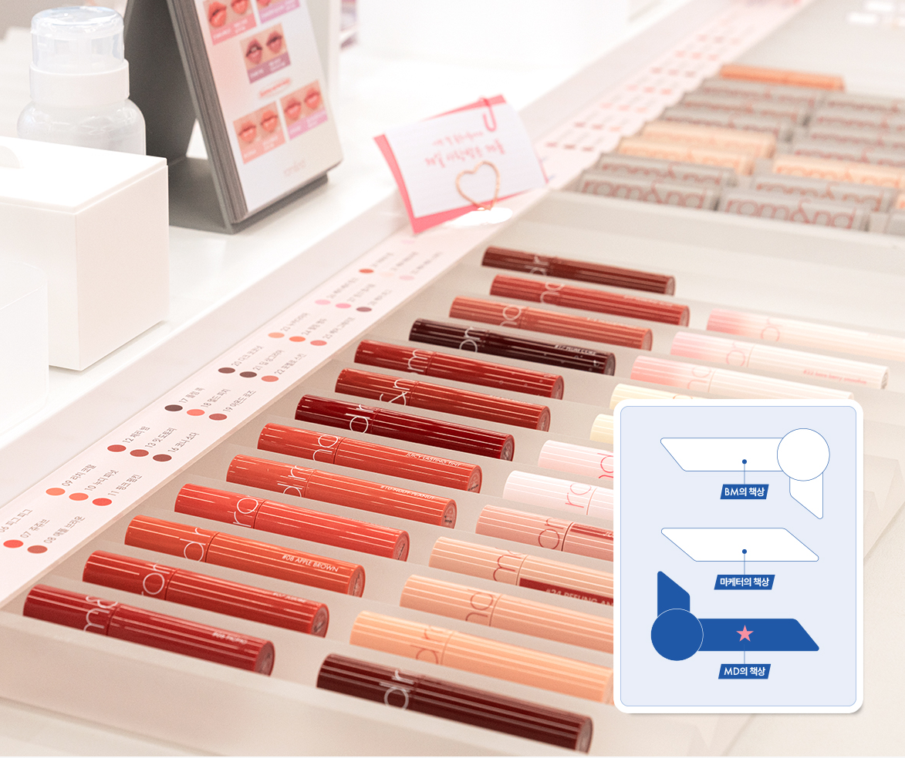
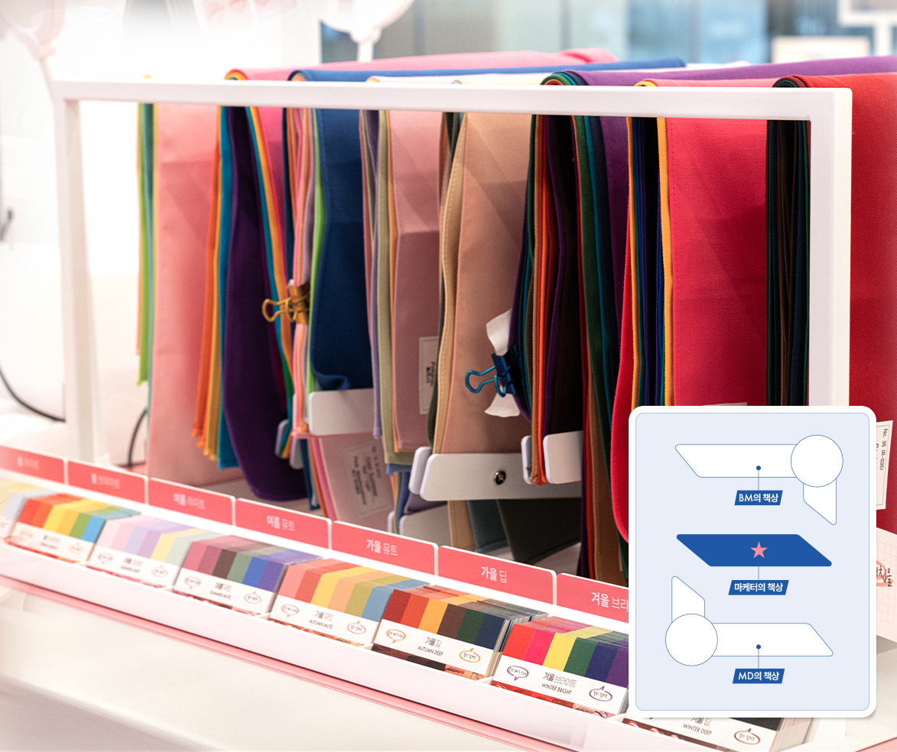
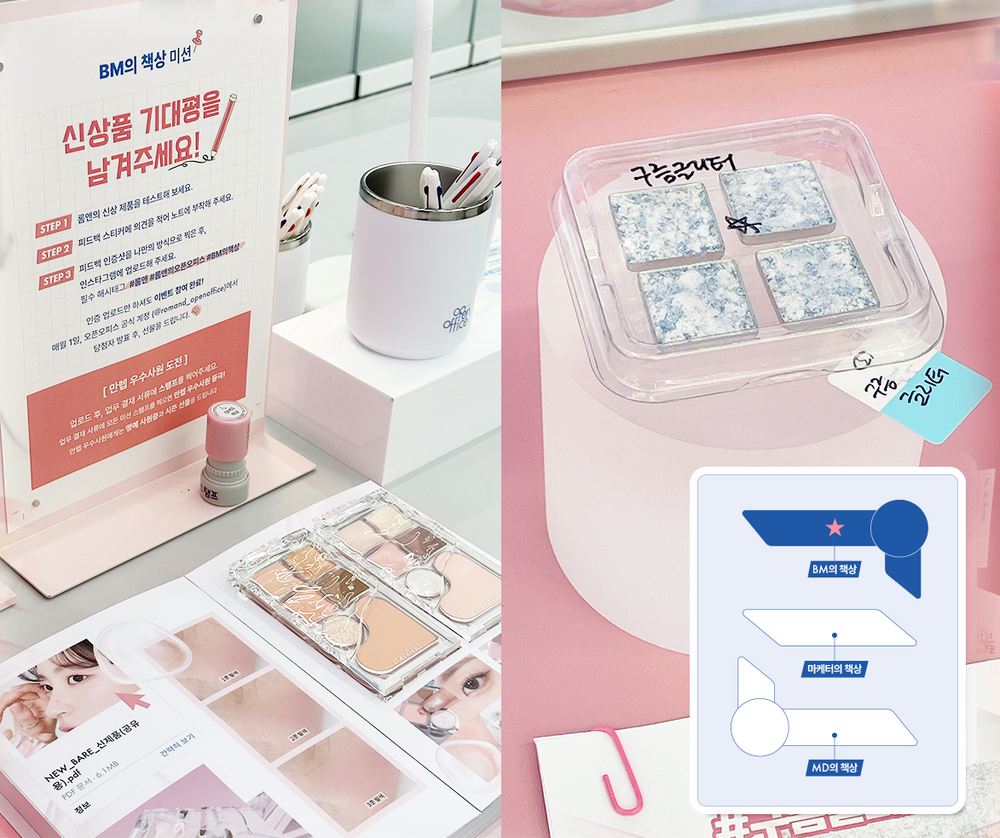
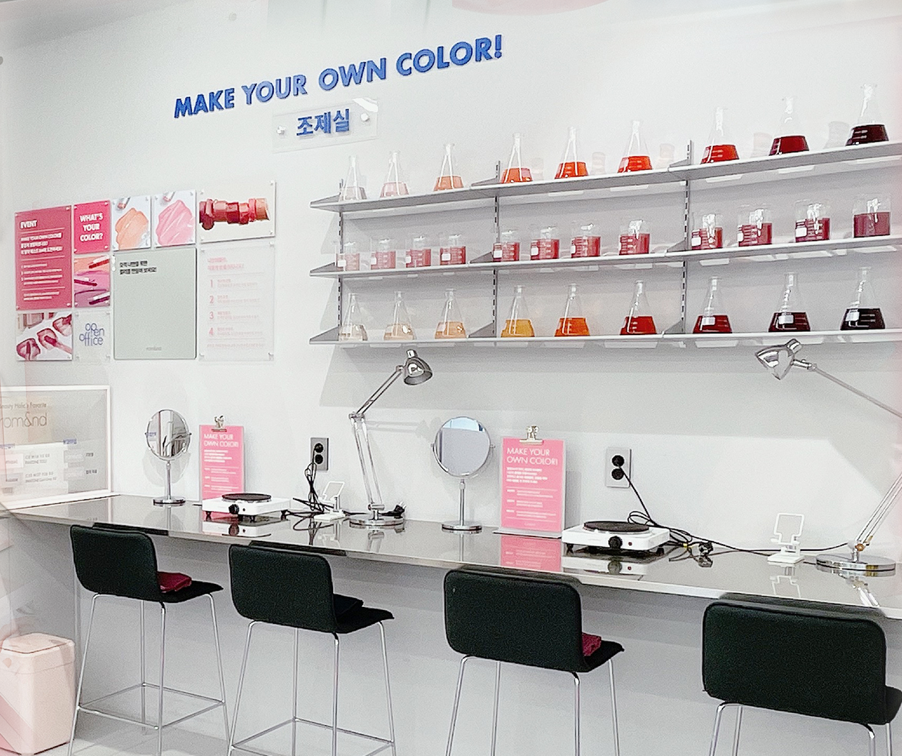
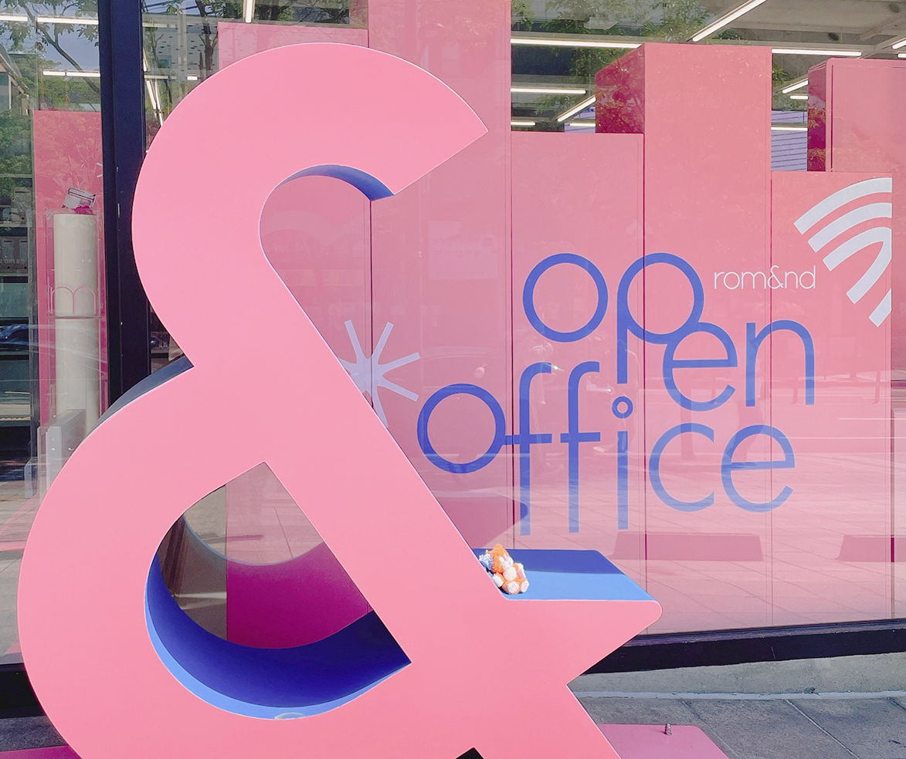
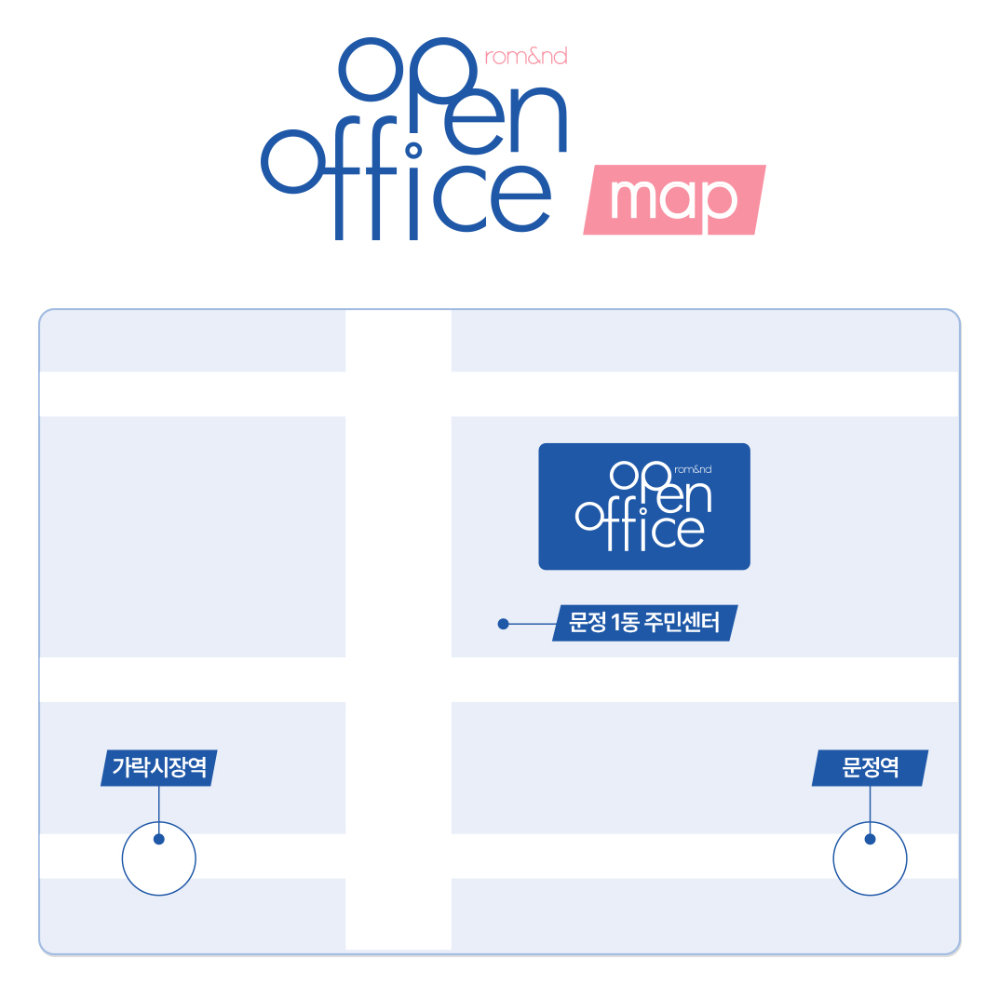

코덕의 열린 사무실,
#롬앤오픈오피스
'롬앤은 어떻게 일해요?'
우리는 조금 더 가까이에서 소비자분들을 만나고자 합니다.
오픈오피스에서는 롬앤이 어떻게 일하는지,
어떻게 상품이 탄생하는지 경험해 볼 수 있어요.
길을 걷다가도 들려서 의견을 나누거나, 직접 제품을 만들 수 있어요.
뷰티를 사랑하는 모두를 위해 열려 있는 공간,
오픈오피스에서 즐거운 덕질을 나눌 명예사원님들을 기다리고 있습니다.
오픈오피스에서는
이런 경험을 해볼 수 있어요!

- 
-
MD의 책상 롬앤 전제품을
모두 테스터하고 구매할 수 있어요. -
마케터의 책상 드레이프 천과 진단 기계로
셀프 퍼스널 컬러 진단을 할 수 있어요. - 
- 
-
BM의 책상 어디에도 없는 롬앤 컬러!
미출시 제품을 사용해 볼 수 있고
단종템 부활 투표로 의견까지 낼 수 있어요.
-
조제실에서 세상에 단 하나 밖에 없는 컬러,
만들고 싶은 립을 직접 만들어 볼 수 있어요. - 
- 
-
포토존 오픈오피스 포토부스와 포토존으로
여러 장의 인생 사진을 마음껏 건질 수 있어요.
- 
-
롬앤의 오픈오피스 오시는 길
지하철 8호선 문정역 1번 출구 OR
3호선 가락시장역 4번출구
서울 송파구 동남로 122 COLLECTED 빌딩
02-1670-2238